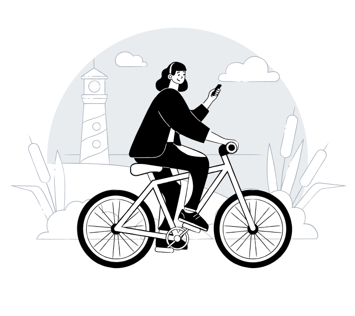

My name is
Sekar Qynasih Inggil Ardinsyah
Mahasiswa Politeknik Harapan Bersama yang saat ini sedang menempuh pendidikan Program D4 di bidang Teknik Informatika. Memiliki bakat dan minat di bidang desain dan seni, selain itu juga bertekad menjadi seorang polwan.
